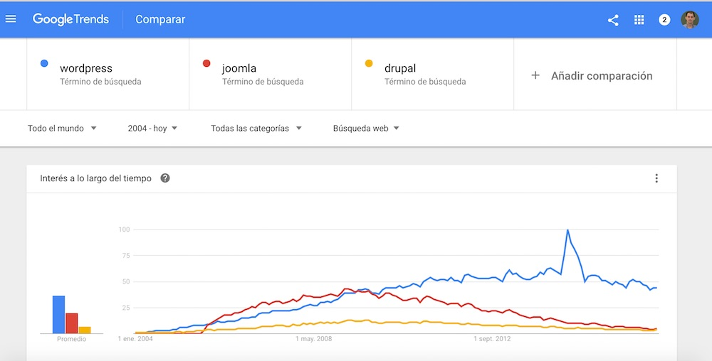

Si aún no conoces Wordpress, es hora de descubrir algo nuevo. Bajo este nombre se esconde un software genial con el que podemos crearnos nuestro propio sitio web en muy poco tiempo y de una forma sencilla. Reune ciertas características que hace que hoy en día sea la alternativa número uno a la hora de elegir un sistema gestor de contenidos (CMS) para crear nuestras webs.
Tanto si quieres crear un simple blog, una landing page para una empresa o una tienda virtual, Wordpress te permite realizarlo cómoda y rápidamente.
¿Quién usa Wordpress?
No es mi intención avivar el debate de qué gestor de contenidos es el mejor hoy día. Además, es difícil saber con exactitud qué sistema es el más utilizado actualmente. Sin embargo, podemos usar Google Trends para ver la tendencia en las búsquedas de Google de tres CMS concretos y compararlos.
Aquí te dejo los resultados de esta búsqueda para que juzgues por ti mismo:

Los aspectos que personalmente más me gustan de Wordpress
Son ya muchos años construyendo webs y trabajando con esta herramienta. ¿Por qué me gusta tanto? Aquí te enumero algunas de las características que personalmente creo que hacen de Wordpress una buena elección.
- La sencillez a la hora de crear y administrar nuevas páginas o entradas en nuestro blog. Tanto si eres un profesional de la informática como si estás dando tus primeros pasos, con Wordpress podrás crear sitios impresionantes.
- Una gestión simplificada de los elementos multimedia que queramos incluir. Añade, edita o borra imágenes para incluirlas en tu web con solo arrastrar y soltar.
- Te permite personalizar al máximo la apariencia del sitio. A través de temas de apariencia, puedes cambiar el aspecto de tu web en unos segundos. Más adelante, en otra entrada, hablaremos de la importancia de elegir un buen tema de apariencia.
- Se adapta para que puedas construir cualquier web que necesites. Para ello Wordpress hace uso de plugins, que permiten añadir nuevas funcionalidades a nuestro sofware original. Con ellos, puedes incluso convertir tu sitio web en una tienda virtual o una red social.
- Funciona muy bien y está en constante crecimiento, añadiendo mejoras cada poco tiempo.
- Por último, Wordpress es software libre, por lo que podrás acceder, modificar y compartir el código fuente del proyecto.
Más cosas de este sistema
Wordpress tiene dos partes diferenciadas:
-
Front-end o parte pública del sitio web. O dicho de otra forma, lo que todo el mundo ve cuando accede a tu web.
-
Back-end o parte de administración de Wordpress. A este apartado solo se puede acceder tras haberse logueado con un usuario con privilegios. Desde este podemos administrar toda nuestra web: crear nuevas entradas, páginas, usuarios, etc.
Y ¿qué podemos administrar? muchas cosas. Entre ellas:
- Los usuarios. Puedes dar de alta a distintos usuarios para que puedan acceder al apartado de administración de tu sitio. Los permisos que tendrá dicho usuario dependerá del rol que le asignes.
- Crear páginas (pages) o entradas (posts). Aunque son parecidos no son lo mismo. Las páginas se usan para crear diferentes tipos de contenido estático, como por ejemplo: contacto, Acerca de, etc. Las entradas son cada una de las publicaciones que van a componer nuestro blog.
- Gestionar el contenido multimedia, a través del apartado “Medios”.
- Personalizar la apariencia para que el sitio esté a tu gusto.
- Añadir nuevas funcionalidades desde “Plugins”.
¿Cómo podemos crear nuestro propio sitio?
Este punto puede traer a confusión a mucha gente. Existen dos formas para crear un blog con Wordpress:
Crea tu sitio web a través de Wordpress.com (principiantes)
Esta es la más sencilla. Para crearlo tan solo necesitas seguir tres pasos: accede a la web Wordpress.com, date de alta y rellena el formulario. Estarás a solo tres pasos para crear tu blog.
En función de tus necesidades podrás crearlo de forma totalmente gratuita o bien, si quieres más características, pagando algunos de los planes que ofrecen en su web.
Ventajas
- No necesitas amplios conocimientos.
- No tienes que instalar nada.
- Puedes crear un blog en cuestión de minutos.
- No hace falta que actualices el sistema. Siempre estarás usando la última versión. De eso se encarga Wordpress.com.
Inconvenientes
- En función del plan que elijas, tienes limitaciones a la hora de personalizar tu blog.
Crea tu sitio web a través de Wordpress.org (expertos)
Esta segunda opción no es apta para principiantes. Consiste en descargar el software e instalarlo en tu propio servidor web. Para ello, accederemos a Wordpress.org y descargaremos la aplicación.
También existe una alternativa intermedia. Hoy día hay muchos hostings (empresas que te permiten almacenar tu web y tenerlo disponible en Internet) que ofrecen planes personalizados para sitios con Wordpress. Con ellos, dicha empresa se encarga de la instalación (y en algunos casos de la actualización) de tu Wordpress. Por tanto permite que usuarios con algunos conocimientos puedan optar por esta segunda forma de tener tu sitio con Wordpress.
Ventajas
- Puedes personalizar completamente tu sitio y sin ningún tipo de limitación. Por ejemplo, podrás instalar cualquier tema para personalizar la apariencia de tu sitio web.
Inconvenientes
- Necesitas conocimientos para la instalación y mantenimiento.
- Crear un blog requiere más tiempo.